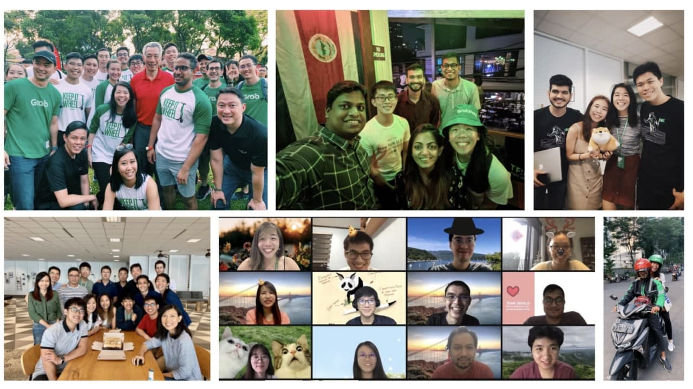

In 2017, I had just completed a 6 months internship with a Market Research firm and this sent me over a tipping point - where I was introduced to the power of data. Beyond generating ‘Big ideas’ and launching marketing campaigns on a playbook, we could use consumer insights to make decisions regarding product, feature launches.
In May 2018, a battle raged around Singapore in the ride hailing space between Uber and Grab. As I interviewed with Uber and was awarded a Marketing Analyst position with their traineeship programme (internship with guaranteed conversion), this coincided with the Grab-Uber merger which ended the battle for consumer hearts and minds. Overnight, I was now a Grabber. Joining Grab did not translate into an equivalent role in Marketing Analytics, instead I joined an Analytics Architecture team as an intern. For the next 6 months, I coded daily with Python (which I had 0 experience in) to answer the business question - ‘What opportunities were there for Grab within the airlines and hospitality industry?’
At end 2018, I graduated with a Bachelor’s degree in Business Management and was converted at Grab as a full time Regional Data Analyst. By 2021, I am a Data Scientist (Analytics) - working on GrabExpress, amongst product managers, business owners, data scientists and engineers.

What have I picked up over my early stage career?
Bring your strengths to the tableIn a Zoom room full of extremely smart people (as I am in daily), I may not have the most advanced technical know-how but I may be closer to the audience as a business graduate. Translating data points into infographics, distilling top three key messages from complex models and presenting data simulations concisely; this is what I can contribute to my team. Within my first year, I spearheaded the socialisation of Voice of Customer internally - an ambitious NLP project which leverages customer, driver and merchant feedback to measure topics and sentiment towards Grab. Presentation skills and strategic messaging play a big role in driving alignment and adoption.
Be CuriousI have strong managers and mentors who allow me to leverage their expertise to expedite my own learning. I have a huge team who have the patience to share knowledge and walk through prior learnings as peers. I start the day with many questions in mind, brainstorming our approach towards the daily tough problems our team faces. Being curious allows me to be unafraid to ask questions and iterate regularly. Within my second year, I learnt the complexities of building Data Marts - data repositories which act as a source of truth for Grab’s bookings data, by supporting a stakeholder ratio of 1: 300. Working alongside my team, I was able to absorb SQL best practices on data architecture and ETL to scale up usage meaningfully.
Contribute to CultureMy extroverted nature allows me to build my team culture from within. As I anchor greatly on meaningful interactions with my peers, mentors and manager, I aim to bring empathy to work by asking for their bigger context or thoughts. Within my third year, I took on a secondary role to lead a Team Cheerleader initiative to bond my team of 40 analysts regionally. By organising monthly syncs featuring offline and online activities consistently over 3 quarters, I am able to connect with Grabbers outside work context. This extra involvement brings me fulfilment and pride to be part of the team.
